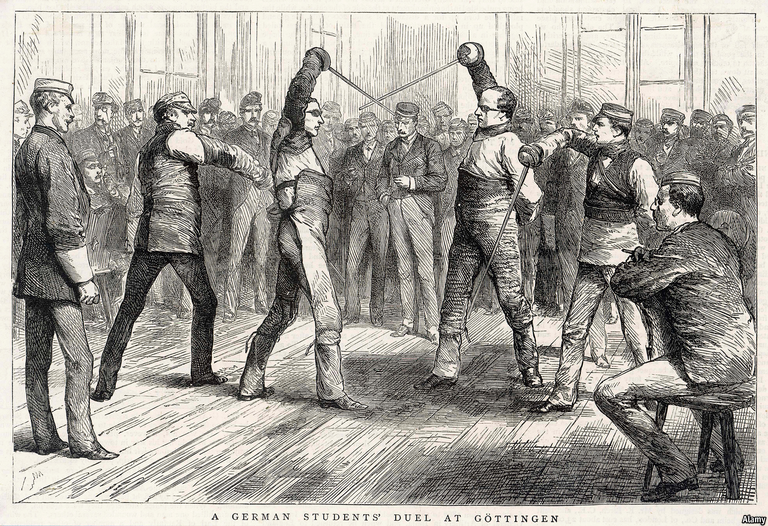

2021-02-10T07:12:25+00:00
Family firms
家族企业
家族企業
Mittelstand-off
中小型对峙
中小型對峙
All families argue. Some of the most explosive rows happen inside Germany’s powerhouse companies
没有不吵架的家庭。一些最火爆的争执发生在德国成功企业的内部
沒有不吵架的家庭。一些最火爆的爭執發生在德國成功企業的內部

GERMAN FIRMS have, like their country itself, a reputation for being staid. Look closer, though, and many brim with intrigue. Albert Darboven, a coffee tycoon, pushed his own son Arthur out of JJ Darboven and tried to adopt a friend as his heir and successor. The five children from the first marriage of Rudolf-August Oetker, grandson of the eponymous founder of a pudding dynasty, and the three offspring from his third have been at each other’s throats for years. The feud among the billionaire scions of the Tengelmann retail empire led to speculation that Karl-Erivan Haub, the group’s fifth-generation CEO, faked his own death in a skiing accident. Last month his brother, Georg Haub, reportedly withdrew the application to have him declared dead.
德国公司和它们的国家一样，素以庄重古板著称。但许多企业内部实则充满明争暗斗。咖啡大亨阿尔伯特·达波文（Albert Darboven）把亲生儿子亚瑟（Arthur）逐出了JJ Darboven公司，并试图认一位朋友做养子来当他的继承人和接班人。鲁道夫·奥古斯特·欧特克（Rudolf-August Oetker）是以家族名命名的布丁巨头的第三代掌门人，他第一次婚姻所生的五个孩子和第三次婚姻的三个孩子多年来争得你死我活。零售帝国腾格尔曼（Tengelmann）的豪阔子弟之间长期不和，因此有人猜测该集团第五代CEO卡尔·埃里温·豪布（Karl Erivan Haub）制造了自己在滑雪事故中死亡的假象。据报道，上月他的兄弟格奥尔格·豪布（Georg Haub）已经撤回了宣告卡尔死亡的申请。
德國公司和它們的國家一樣，素以莊重古板著稱。但許多企業內部實則充滿明爭暗鬥。咖啡大亨阿爾伯特·達波文（Albert Darboven）把親生兒子亞瑟（Arthur）逐出了JJ Darboven公司，並試圖認一位朋友做養子來當他的繼承人和接班人。魯道夫·奧古斯特·歐特克（Rudolf-August Oetker）是以家族名命名的布丁巨頭的第三代掌門人，他第一次婚姻所生的五個孩子和第三次婚姻的三個孩子多年來爭得你死我活。零售帝國騰格爾曼（Tengelmann）的豪闊子弟之間長期不和，因此有人猜測該集團第五代CEO卡爾·埃里溫·豪布（Karl Erivan Haub）製造了自己在滑雪事故中死亡的假象。據報道，上月他的兄弟格奧爾格·豪布（Georg Haub）已經撤回了宣告卡爾死亡的申請。
Apart from ripping families apart and tearing down reputations, such feuds destroy shareholder value—including that accruing to the warring clans. Hermann Simon, a management consultant to many powerhouses in Germany’s Mittelstand of medium-sized firms, says succession is their biggest problem. Families that quarrel risk a split, a sale to a rival or bankruptcy. With early planning and discussions many rows could be avoided. Yet most founders prefer to keep their options open. And few wish to contemplate retirement.
除了导致家族不和及名誉受损，这种长期争斗还会破坏股东价值——包括属于这些争斗家族的那部分。为德国许多成功的中型企业担任管理顾问的赫尔曼·西蒙（Hermann Simon）表示，继任是它们最大的问题。纷争不休的家族可能分崩离析、卖给竞争对手，或者破产。如果尽早规划和讨论，很多争端或可避免。然而，大多数创始人都倾向于保留选择余地。而且很少有人愿意考虑退休。
除了導致家族不和及名譽受損，這種長期爭鬥還會破壞股東價值——包括屬於這些爭鬥家族的那部分。為德國許多成功的中型企業擔任管理顧問的赫爾曼·西蒙（Hermann Simon）表示，繼任是它們最大的問題。紛爭不休的家族可能分崩離析、賣給競爭對手，或者破產。如果儘早規劃和討論，很多爭端或可避免。然而，大多數創始人都傾向於保留選擇餘地。而且很少有人願意考慮退休。
Dynastic dissonance
王朝恩怨
王朝恩怨
More than 90% of German firms are family companies. Unusually, that includes many multinationals across a range of industries: appliances (Miele), carmaking (BMW, Continental and Volkswagen), chemicals (Henkel), engineering (Bosch, Heraeus, Knorr-Bremse), food (Oetker), media (Bertelsmann), medicines (Merck) and retail (Aldi and Schwarz, which owns Lidl grocers). Fully 30% of companies with more than 500 employees are in the hands of their founding clans.
超过90%的德国公司都是家族企业。不同寻常的是，它们当中有许多跨国公司，涉及众多行业：家电（美诺）、汽车制造（宝马、大陆和大众）、化工（汉高）、工程（博世、贺利氏、克诺尔）、食品（欧特家）、传媒（贝塔斯曼）、医药（默克）和零售（阿尔迪以及拥有连锁超市利德的施瓦茨）。员工超过500人的公司有足足三成掌握在创始家族手里。
超過90%的德國公司都是家族企業。不同尋常的是，它們當中有許多跨國公司，涉及眾多行業：家電（美諾）、汽車製造（寶馬、大陸和大眾）、化工（漢高）、工程（博世、賀利氏、克諾爾）、食品（歐特家）、傳媒（貝塔斯曼）、醫藥（默克）和零售（阿爾迪以及擁有連鎖超市利德的施瓦茨）。員工超過500人的公司有足足三成掌握在創始家族手裡。
The profusion of family companies is partly a function of inheritance tax. This has historically been high in America and France but modest in Germany—and, crucially, waived for heirs who keep their family business running for at least seven years, and protect jobs and wages. Another explanation is culture. Whereas Americans admire self-made men, Germans respect old money. Neureiche (newly rich) are dismissed as arriviste vulgarians.
家族企业大量存在的原因之一是遗产税。历史上，美国和法国的遗产税率一直很高，在德国却适中——而且关键的一点是，如果继承人保持家族企业的运营不少于七年并且保障职位和工资，可免于缴纳遗产税。另一种解释是文化。美国人崇尚白手起家，德国人推崇贵族世家。新贵会被视为庸俗的暴发户而遭受冷眼。
家族企業大量存在的原因之一是遺產稅。歷史上，美國和法國的遺產稅率一直很高，在德國卻適中——而且關鍵的一點是，如果繼承人保持家族企業的運營不少於七年並且保障職位和工資，可免於繳納遺產稅。另一種解釋是文化。美國人崇尚白手起家，德國人推崇貴族世家。新貴會被視為庸俗的暴發戶而遭受冷眼。
Whatever the reasons, the upshot is ubiquitous strife. For conflict is built into family businesses, says Arist von Schlippe of the Wittener Institute for Family Companies, a think-tank. Each is a paradox, he says, combining the inclusive logic of a family with the selective logic of business. As an example, he recalls advising a founder who wanted each of his four sons to inherit one-quarter of the family concern, while also encouraging all of them to strive for the qualifications to become its next boss. That is a recipe for discord.
无论原因为何，其结果就是冲突无处不在。智库威特纳家族企业研究所（Wittener Institute for Family Companies）的阿里斯特·冯·施利普（Arist von Schlippe）认为，这是由于家族企业本身所固有的矛盾。他说，家族企业将家庭的包容性逻辑与商业的选择性逻辑结合在一起，因此每家都是一个悖论。举个例子，他记得曾给一位创始人提供咨询，这位老板想让四个儿子各自继承四分之一的家业，但同时又鼓励他们力争成为下一任掌门人。这样自然会导致不和。
無論原因為何，其結果就是衝突無處不在。智庫威特納家族企業研究所（Wittener Institute for Family Companies）的阿里斯特·馮·施利普（Arist von Schlippe）認為，這是由於家族企業本身所固有的矛盾。他說，家族企業將家庭的包容性邏輯與商業的選擇性邏輯結合在一起，因此每家都是一個悖論。舉個例子，他記得曾給一位創始人提供諮詢，這位老闆想讓四個兒子各自繼承四分之一的家業，但同時又鼓勵他們力爭成為下一任掌門人。這樣自然會導致不和。
Succession is easier when there is only one descendant, or when others show little interest in business. It gets complicated in dynasties with plenty of children from multiple marriages. Ferdinand Piëch, a former boss of Volkswagen Group and grandson of the carmaker’s founder, Ferdinand Porsche, had six daughters and seven sons from three marriages and a couple of liaisons. Ever since Piëch died in 2019 his 13 children have been fighting in court with his last wife. An estimated €1.5bn ($1.8bn) in family wealth is at stake.
如果只有一名后裔，或者其他后裔对做生意不感兴趣时，安排继承就会容易一些。在因多次婚姻而有众多子女的大家族里，情况往往十分复杂。大众集团前老板费迪南德·皮耶希（Ferdinand Piëch）是大众创始人费迪南德·保时捷（Ferdinand Porsche）的孙子，他的三段婚姻和几段婚外情带来了六个女儿和七个儿子。自皮耶希于2019年去世以来，他的13个孩子一直在法庭上与他的最后一任妻子争斗不休。涉及的家族财富估计有15亿欧元（18亿美元）。
如果只有一名後裔，或者其他後裔對做生意不感興趣時，安排繼承就會容易一些。在因多次婚姻而有眾多子女的大家族裡，情況往往十分複雜。大眾集團前老闆費迪南德·皮耶希（Ferdinand Piëch）是大眾創始人費迪南德·保時捷（Ferdinand Porsche）的孫子，他的三段婚姻和幾段婚外情帶來了六個女兒和七個兒子。自皮耶希於2019年去世以來，他的13個孩子一直在法庭上與他的最後一任妻子爭鬥不休。涉及的家族財富估計有15億歐元（18億美元）。
The trickiest succession is from the first generation to the second. If a family can pull that off without bad blood, subsequent handovers are likelier to succeed, says Kirsten Baus of the Institute for Family Strategy, a think-tank in Stuttgart. In America 70% of family firms fold or get sold before the second generation gets a look-in. Just 10% remain privately held going concerns into the third generation, according to a study in the Harvard Business Review. In Germany 16% of small or medium-sized companies say that they will probably close down when the boss retires (though this does not count firms that go bust). Most would like to stay in the family but are unable to persuade a relative to take over.
最棘手的传承是从第一代到第二代。斯图加特智库家族战略研究所（Institute for Family Strategy）的克尔斯滕·鲍斯（Kirsten Baus）说，如果一个家族能够在没有不和的情况下完成第一棒交接，那么将来就更有可能顺利传承。在美国，70%的家族企业在第二代有机会接手之前就已经倒闭或出售。《哈佛商业评论》的一项研究显示，只有10%的企业能维持为一家私人持有的活跃运营的公司到第三代。在德国，16%的中小企业表示等老板退休时可能就会关门（而这并不包括破产的公司）。多数企业都想保持由家族经营，但苦于无法说服一位家族成员接手。
最棘手的傳承是從第一代到第二代。斯圖加特智庫家族戰略研究所（Institute for Family Strategy）的克爾斯滕·鮑斯（Kirsten Baus）說，如果一個家族能夠在沒有不和的情況下完成第一棒交接，那麼將來就更有可能順利傳承。在美國，70%的家族企業在第二代有機會接手之前就已經倒閉或出售。《哈佛商業評論》的一項研究顯示，只有10%的企業能維持為一家私人持有的活躍運營的公司到第三代。在德國，16%的中小企業表示等老闆退休時可能就會關門（而這並不包括破產的公司）。多數企業都想保持由家族經營，但苦於無法說服一位家族成員接手。
Conflict is often not chiefly over money. Relatives spar because they have different aspirations for the business, or feel they are being mistreated. Arthur Darboven was pushed out by his father, and stripped of a part of his stake. Among other things, Mr Darboven reportedly disapproved of his son’s launch of a racy new brand called Coffee-Erotic. At the age of 83 Albert Darboven remains at the helm of his firm. (After a court denied his adoption strategy, he is reportedly pondering creating a foundation to control the firm.)
矛盾往往并不主要在金钱。家族成员不和是因为他们对生意的抱负不同，或者觉得自己受到不公平的对待。亚瑟·达波文被父亲逐出公司，并被剥夺了部分股份。据称达波文对儿子有诸多不满，其中包括儿子推出的一个名为“情色咖啡”的有点不雅的新品牌。现年83岁的阿尔伯特·达波文仍然执掌自己的公司。（一家法院否决了他的收养策略后，据说他正在考虑成立一个基金会来控制公司。）
矛盾往往並不主要在金錢。家族成員不和是因為他們對生意的抱負不同，或者覺得自己受到不公平的對待。亞瑟·達波文被父親逐出公司，並被剝奪了部分股份。據稱達波文對兒子有諸多不滿，其中包括兒子推出的一個名為“情色咖啡”的有點不雅的新品牌。現年83歲的阿爾伯特·達波文仍然執掌自己的公司。（一家法院否決了他的收養策略後，據說他正在考慮成立一個基金會來控制公司。）
To avert such to-dos, some clans organise an annual family day, holiday camps for their youngsters and even dedicate a house to family reunions, often the home of the founder. Most also draw up codes of conduct, says Herbert Wettig, an adviser of family companies. The 680 members of the Haniel clan (who until recently owned Metro supermarkets) have an 80-page code, which stipulates that no family member can work for the company, not even as an intern. The Reimanns, billionaire owners of JAB, a coffee-to-cosmetics group, have a similar rule. The Trumpfs have a code that covers succession and the sale of shares in the firm, but also includes guidelines for religious tolerance, modesty and respect for others.
为避免这种混乱，一些家族会组织年度家庭日活动，为年轻人举办度假营，甚至拿出一栋房子专门用于家庭聚会，通常是在创始人的家里。家族企业顾问赫伯特·维蒂格（Herbert Wettig）表示，大多数家族还制定了行为准则。哈尼尔家族（Haniel，不久之前还持有麦德龙超市）的680名成员有一份80页的准则，其中规定任何家族成员都不得在自家公司工作，包括实习。拥有主营咖啡到化妆品的JAB集团、身家亿万的莱曼家族（Reimann）也有类似的规定。特伦普夫（Trumpf）家族的行为准则不仅涵盖继承和出售公司股份，还包括宗教宽容、谦逊和尊重他人等指引。
為避免這種混亂，一些家族會組織年度家庭日活動，為年輕人舉辦度假營，甚至拿出一棟房子專門用於家庭聚會，通常是在創始人的家裡。家族企業顧問赫伯特·維蒂格（Herbert Wettig）表示，大多數家族還制定了行為準則。哈尼爾家族（Haniel，不久之前還持有麥德龍超市）的680名成員有一份80頁的準則，其中規定任何家族成員都不得在自家公司工作，包括實習。擁有主營咖啡到化妝品的JAB集團、身家億萬的萊曼家族（Reimann）也有類似的規定。特倫普夫（Trumpf）家族的行為準則不僅涵蓋繼承和出售公司股份，還包括宗教寬容、謙遜和尊重他人等指引。
No charter is foolproof; the Oetker codex did not stop them clashing. Some families unable to find agreement decide to sell out or, if they are large enough, go public. In 2017 Wirtgen, a construction firm with annual sales of €3bn, was sold to John Deere for $5.2bn. The founder’s sons worried they would be too old to run a company by the time their children could take over. After falling out bitterly with his only son, Heinz Herrmann Thiele listed one-third of Knorr-Bremse, the company he built into a leading purveyor of train and lorry brakes, on the Frankfurt stock exchange in 2018. He and his daughter raked in €3.9bn with the flotation.
没有什么章程能写得滴水不漏；欧特家的守则也并没能避免内部冲突。有些无法达成一致的家族会决定把公司卖掉，或者如果体量足够大就上市。2017年，年销售额达30亿欧元的建筑公司维特根（Wirtgen）以52亿美元卖给了约翰迪尔（John Deere）。公司创始人的几个儿子担心，等到自己的孩子长大能接手时，他们恐怕已经老得管理不动公司了。海因茨·赫尔曼·蒂勒（Heinz Herrmann Thiele）把他创建的克诺尔（Knorr-Bremse）发展成了领先的火车和卡车制动器供应商，在和唯一的儿子闹翻之后，于2018年把公司的三分之一拿到法兰克福证券交易所上市，为自己和女儿赚得39亿欧元。
沒有什麼章程能寫得滴水不漏；歐特家的守則也並沒能避免內部衝突。有些無法達成一致的家族會決定把公司賣掉，或者如果體量足夠大就上市。2017年，年銷售額達30億歐元的建築公司維特根（Wirtgen）以52億美元賣給了約翰迪爾（John Deere）。公司創始人的幾個兒子擔心，等到自己的孩子長大能接手時，他們恐怕已經老得管理不動公司了。海因茨·赫爾曼·蒂勒（Heinz Herrmann Thiele）把他創建的克諾爾（Knorr-Bremse）發展成了領先的火車和卡車制動器供應商，在和唯一的兒子鬧翻之後，於2018年把公司的三分之一拿到法蘭克福證券交易所上市，為自己和女兒賺得39億歐元。
Or quarrelsome clans can go their separate ways. Some of corporate Germany’s biggest names are the result of break-ups. A fight between the shoemaking Dassler brothers led in 1948 to the creation of Adidas and Puma, each of which now makes pricey trainers. A feud in 1960 between the Albrecht brothers over whether to sell cigarettes also resulted in a bifurcation: Aldi Nord operates in northern Germany and a number of other, mostly western and central European countries; Aldi Süd covers southern Germany, remaining parts of Europe, plus Australia and China.
又或者，争执不休的家族可以一拍两散，分道扬镳。德国一些响当当的大品牌正是家族分裂的结果。做制鞋生意的达斯勒（Dassler）两兄弟反目后，于1948年诞生了阿迪达斯和彪马两家企业，现在都还经营高端运动鞋。1960年，阿尔布雷希特（Albrecht）兄弟在是否销售香烟的问题上相持不下，也导致公司一分为二：北阿尔迪（Aldi Nord）在德国北部以及主要在西欧和中欧的一些国家开展业务；南阿尔迪（Aldi Süd）覆盖德国南部、欧洲其余地区，以及澳大利亚和中国。
又或者，爭執不休的家族可以一拍兩散，分道揚鑣。德國一些響噹噹的大品牌正是家族分裂的結果。做製鞋生意的達斯勒（Dassler）兩兄弟反目後，於1948年誕生了阿迪達斯和彪馬兩家企業，現在都還經營高端運動鞋。1960年，阿爾布雷希特（Albrecht）兄弟在是否銷售香煙的問題上相持不下，也導致公司一分為二：北阿爾迪（Aldi Nord）在德國北部以及主要在西歐和中歐的一些國家開展業務；南阿爾迪（Aldi Süd）覆蓋德國南部、歐洲其餘地區，以及澳大利亞和中國。
A split may make sense for groups with diverse interests, says Klaus-Heiner Röhl of the German Economic Institute, another think-tank. But it weakens specialist firms of the sort that populate the Mittelstand. The latest generation of Aldi Nord heirs has fought over money and power for a decade. The row is preventing a sensible re-merger of the Aldis. Never mind that it would help both businesses. ■
另一家智库德国经济研究所（German Economic Institute）的克劳斯-海纳·罗尔（Klaus-Heiner Röhl）表示，对于内部有多元利益追求的集团来说，分家也许是合理的。但这会削弱构成了德国中小企业界的专业公司的实力。北阿尔迪的最新一代继承人十年来一直在争权夺利。这种争斗阻碍了两家阿尔迪重新合体的明智走向，即便这原本对双方都有益。
另一家智庫德國經濟研究所（German Economic Institute）的克勞斯-海納·羅爾（Klaus-Heiner Röhl）表示，對於內部有多元利益追求的集團來說，分家也許是合理的。但這會削弱構成了德國中小企業界的專業公司的實力。北阿爾迪的最新一代繼承人十年來一直在爭權奪利。這種爭鬥阻礙了兩家阿爾迪重新合體的明智走向，即便這原本對雙方都有益。